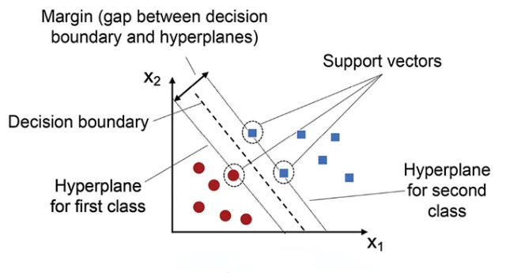
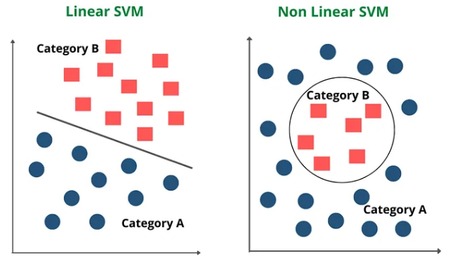
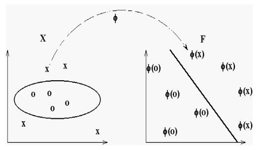
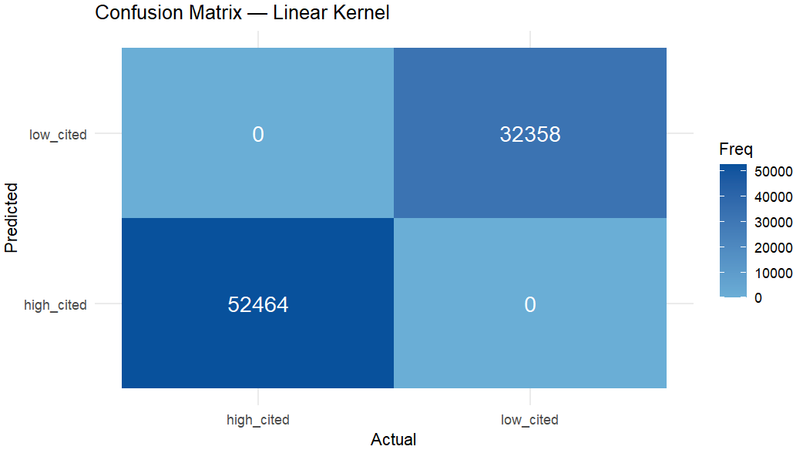
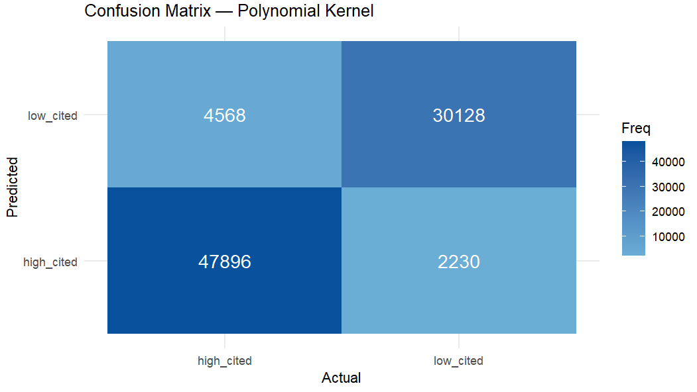
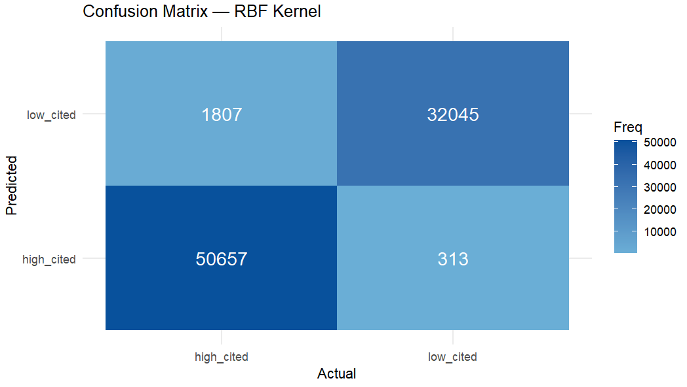
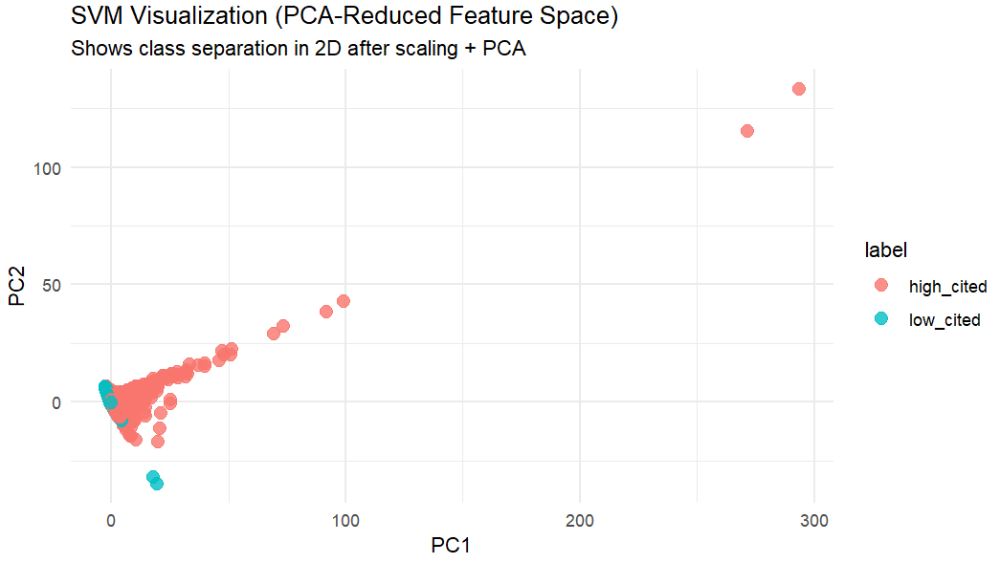
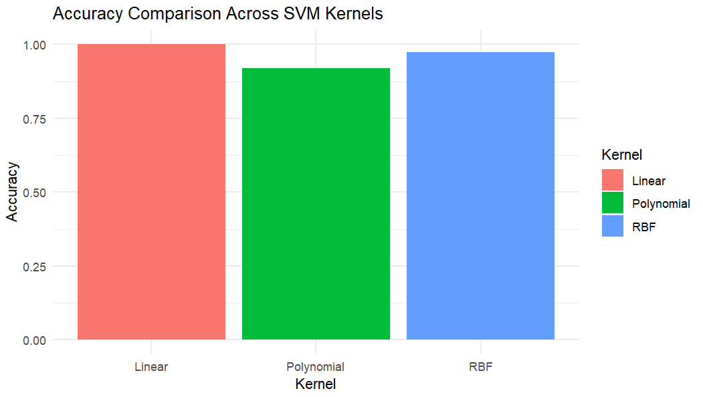

Source: Download original sample
Support Vector Machines (SVMs) are supervised learning models used for classification, and the basic ideas behind them are shown in the images below. In a simple linear SVM, the model tries to draw the best possible straight line (or hyperplane) that separates two classes while leaving the largest possible margin between them. The points that lie closest to this boundary are called support vectors, and they determine exactly where the hyperplane is placed (Shown below in Fig. 1). This works well when the data can be separated with a straight line, as shown in the first image. But many real-world datasets are not linearly separable, and a straight boundary is not enough to divide the classes cleanly. The second image (Fig. 2) shows this situation, where one class is surrounded by another and a curved boundary is needed. To handle these more complex patterns, SVMs use kernels, which allow the model to transform the data into a higher-dimensional space where a linear separator becomes possible. This transformation happens through the kernel trick, which relies on dot products to compute similarity without ever explicitly calculating the higher-dimensional coordinates. Common kernels include the polynomial kernel and the radial basis function (RBF) kernel, both of which allow SVMs to learn flexible, nonlinear decision boundaries. For example, a polynomial kernel with parameters (r = 1) and (d = 2) expands a 2D point into a higher-dimensional feature space that includes squared and interaction terms, making nonlinear separation possible.

Figure 1. Linear SVM showing the decision boundary, margin, and support vectors. Source

Figure 2. Comparison of linear and nonlinear SVMs, illustrating how kernels allow curved decision boundaries. Source
To see how kernels transform data, consider a simple example using the polynomial kernel. The polynomial kernel has the form:
K(x, z) = (x · z + r)d
For this project, we use the example where the parameters are r = 1 and d = 2. This kernel implicitly maps a 2D point into a higher‑dimensional feature space that includes squared terms and interaction terms. Suppose we start with a point x = (x₁, x₂). When the polynomial kernel expands the expression (x · z + 1)², it creates new features that represent nonlinear combinations of the original coordinates. The corresponding feature mapping for a 2D point becomes:
Φ(x) = (x₁², √2 x₁x₂, x₂², √2 x₁, √2 x₂, 1)
This means that even though the original data lives in only two dimensions, the kernel treats it as if it were in a six‑dimensional space. Importantly, the SVM never computes these six coordinates directly. Instead, the kernel trick allows the model to work with these higher‑order features simply by evaluating the dot product inside the kernel function. This is what makes SVMs powerful: they can learn nonlinear boundaries while still operating efficiently.

Figure 3. Illustration of the mapping through example of how a polynomial kernel expands a 2D point into a higher‑dimensional feature space. Source
SVMs require labeled data because they are supervised learning models. This means each row in the dataset must include both predictor variables and a target class label. Before training the model, the data must be split into a Training Set and a Testing Set. The Training Set is used to build the model, while the Testing Set evaluates how well the model generalizes to new data. These sets must be disjoint to avoid data leakage, which would artificially inflate accuracy. SVMs also require numeric input features, so any categorical variables must be encoded. Below is a sample of the dataset used for this project, along with images showing the Training and Testing splits.

Below are samples of the Training and Testing sets used for the SVM model.


The following R code performs Support Vector Machine (SVM) classification using three different kernels: (1) linear, (2) polynomial, and (3) radial basis function (RBF). The workflow begins by loading and cleaning the dataset, filtering only the labeled rows and converting categorical variables into numeric form. Because SVMs require numeric inputs, only the numeric predictor columns were kept for modeling.
Next, the data was split into a 70% Training Set and a 30% Testing Set. The training features were scaled using centering and standardization, and the same transformation was applied to the testing data. Three SVM models were then trained (one for each kernel type). Each model generated predictions on the testing set, and performance was evaluated using confusion matrices and accuracy scores.
The linear SVM achieved perfect performance on this dataset, with an accuracy of 100%. Both classes were classified correctly with no misclassifications. This indicates that the dataset is linearly separable in the scaled feature space, and a simple linear boundary is sufficient.

Figure 8. Confusion matrix for the linear kernel.
Accuracy: 1.000 Sensitivity: 1.000 Specificity: 1.000 Kappa: 1.000
The polynomial kernel (degree = 3) achieved an accuracy of 91.99%. Although still strong, this kernel introduced unnecessary curvature and complexity, which lead to more misclassifications than the linear model. This suggests that the polynomial transformation does not match the structure of the data as well.

Figure 9. Confusion matrix for the polynomial kernel.
Accuracy: 0.9199 Sensitivity: 0.9129 Specificity: 0.9311 Kappa: 0.8325
The RBF kernel performed very well, achieving an accuracy of 97.50%. It captured nonlinear structure in the data and produced a flexible decision boundary. However, it still did not outperform the linear kernel, thus it can be said that the classes are fundamentally linearly separable.

Figure 10. Confusion matrix for the RBF kernel.
Accuracy: 0.9750 Sensitivity: 0.9656 Specificity: 0.9903 Kappa: 0.9475
A PCA scatterplot of the training data (reduced to two principal components) shows clear separation between the high_cited and low_cited classes.

Figure 11. PCA visualization of the training data after scaling.
The bar chart below compares the accuracy of all three kernels. The linear kernel clearly outperforms the polynomial and RBF kernels, achieving perfect accuracy.

Figure 12. Accuracy comparison across SVM kernels.
Across all three SVM models, the results show that the dataset is almost perfectly linearly separable once scaled. The linear kernel achieved 100% accuracy with zero misclassifications (52,464 high_cited and 32,358 low_cited predicted correctly), along with a Kappa of 1.0, indicating complete agreement between predictions and true labels. In contrast, the polynomial kernel reached 91.99% accuracy and produced over 6,700 total errors, while the RBF kernel performed strongly at 97.5% accuracy but still misclassified 2,120 articles. These differences show that nonlinear transformations introduce unnecessary complexity for this dataset.
Conclusively, the linear kernel was the best-performing model. Its perfect accuracy, perfect sensitivity and specificity (both 1.000), and error‑free confusion matrix demonstrate that a simple linear hyperplane fully captures the relationship between the citation‑based features and the high_cited vs. low_cited labels.